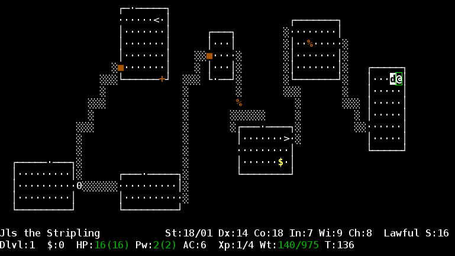

a log of hope

@jordansissel
DreamHost
who am I?
- Czar of Logging @ DreamHost
- full-time work on logstash
- sysadmin for 8 years
things I like


terminology
(for the purpose of this discussion)
what is a log?
(photo by Susie Blackmon)
Sep 16 05:03:21 carrera kernel: md: md2: data-check done.
( timestamp ) ( something that happened )
timestamp + data = log
what about metrics?
108.166.15.188 - - [13/Sep/2012:02:34:22 -0400] "GET /files/logstash/logstash-1.1.0-monolithic.jar HTTP/1.1" 200 40923996 "-" "Chef Client/0.10.8 (ruby-1.9.3-p0; ohai-0.6.10; x86_64-linux; +http://opscode.com)"
50.56.197.244 - - [13/Sep/2012:02:34:37 -0400] "GET / HTTP/1.1" 200 41687 "-" "Mozilla/4.0 (compatible; MSIE 5.0; Windows NT; DigExt; DTS Agent"
89.96.171.210 - - [13/Sep/2012:02:32:49 -0400] "GET /files/logstash/logstash-1.1.0-monolithic.jar HTTP/1.1" 200 40923996 "-" "Chef Client/0.10.10 (ruby-1.9.3-p194; ohai-0.6.4; amd64-freebsd8; +http://opscode.com)"
37.57.128.238 - - [13/Sep/2012:02:37:24 -0400] "GET / HTTP/1.1" 200 41687 "-" "Mozilla/4.0 (compatible; MSIE 5.0; Windows NT; DigExt; DTS Agent"
199.21.99.109 - - [13/Sep/2012:02:38:12 -0400] "GET /blog/tags/packaging HTTP/1.1" 200 15152 "-" "Mozilla/5.0 (compatible; YandexBot/3.0; +http://yandex.com/bots)"
180.76.6.232 - - [13/Sep/2012:02:38:23 -0400] "GET /blog/tags/wrt54gl HTTP/1.1" 200 8867 "-" "Mozilla/5.0 (compatible; Baiduspider/2.0; +http://www.baidu.com/search/spider.html)"
217.227.233.68 - - [13/Sep/2012:02:38:25 -0400] "GET /articles/ssh-security/ HTTP/1.1" 200 16543 "-" "Mozilla/5.0 (X11; Linux x86_64; rv:15.0) Gecko/20100101 Firefox/15.0"
217.227.233.68 - - [13/Sep/2012:02:38:26 -0400] "GET /reset.css HTTP/1.1" 200 1015 "http://www.semicomplete.com/articles/ssh-security/" "Mozilla/5.0 (X11; Linux x86_64; rv:15.0) Gecko/20100101 Firefox/15.0"
217.227.233.68 - - [13/Sep/2012:02:38:26 -0400] "GET /style2.css HTTP/1.1" 200 4877 "http://www.semicomplete.com/articles/ssh-security/" "Mozilla/5.0 (X11; Linux x86_64; rv:15.0) Gecko/20100101 Firefox/15.0"
217.227.233.68 - - [13/Sep/2012:02:38:26 -0400] "GET /images/jordan-80.png HTTP/1.1" 200 6146 "http://www.semicomplete.com/articles/ssh-security/" "Mozilla/5.0 (X11; Linux x86_64; rv:15.0) Gecko/20100101 Firefox/15.0"
217.227.233.68 - - [13/Sep/2012:02:38:31 -0400] "GET /images/web/2009/banner.png HTTP/1.1" 200 52315 "http://www.semicomplete.com/style2.css" "Mozilla/5.0 (X11; Linux x86_64; rv:15.0) Gecko/20100101 Firefox/15.0"
184.73.137.50 - - [13/Sep/2012:02:38:28 -0400] "GET /files/logstash/logstash-1.1.1-monolithic.jar HTTP/1.1" 200 53813805 "-" "Chef Client/0.10.8 (ruby-1.8.7-p334; ohai-0.6.10; i686-linux; +http://opscode.com)"
24.24.235.59 - - [13/Sep/2012:02:38:46 -0400] "GET /kibana/js/lib/excanvas.min.js HTTP/1.1" 200 19415 "http://semicomplete.com/kibana/" "Mozilla/5.0 (Windows NT 6.1; WOW64) AppleWebKit/537.1 (KHTML, like Gecko) Chrome/21.0.1180.89 Safari/537.1"
24.24.235.59 - - [13/Sep/2012:02:38:46 -0400] "GET /kibana/bootstrap/css/bootstrap.min.css HTTP/1.1" 200 71463 "http://semicomplete.com/kibana/" "Mozilla/5.0 (Windows NT 6.1; WOW64) AppleWebKit/537.1 (KHTML, like Gecko) Chrome/21.0.1180.89 Safari/537.1"
24.24.235.59 - - [13/Sep/2012:02:38:46 -0400] "GET /kibana/js/lib/jquery.history.js HTTP/1.1" 200 6466 "http://semicomplete.com/kibana/" "Mozilla/5.0 (Windows NT 6.1; WOW64) AppleWebKit/537.1 (KHTML, like Gecko) Chrome/21.0.1180.89 Safari/537.1"
24.24.235.59 - - [13/Sep/2012:02:38:47 -0400] "GET /kibana/images/feed.png HTTP/1.1" 200 689 "http://semicomplete.com/kibana/" "Mozilla/5.0 (Windows NT 6.1; WOW64) AppleWebKit/537.1 (KHTML, like Gecko) Chrome/21.0.1180.89 Safari/537.1"
life of a log

how can logstash help?
example: apache logs
217.227.233.68 - - [13/Sep/2012:02:38:26 -0400] "GET /images/jordan-80.png HTTP/1.1" 200 6146 "http://www.semicomplete.com/articles/ssh-security/" "Mozilla/5.0 (X11; Linux x86_64; rv:15.0) Gecko/20100101 Firefox/15.0"
input {
file {
type => "web"
path => "/var/log/httpd/access.log"
}
}
filter {
grok {
type => "web"
pattern => "%{COMBINEDAPACHELOG}"
}
date {
type => "web"
timestamp => "dd/MMM/yyyy:HH:mm:ss Z"
}
}
output {
elasticsearch { }
}
top downloads for logstash

folks install logstash with chef

go deeper, zoom in
what else can we solve?
/regex/
/what does this match/
(((\b(?:Jan(?:uary)?|Feb(?:ruary)?|Mar(?:ch)?|Apr(?:il)?|May|Jun(?:e)?|Jul(?:y)?|Aug(?:ust)?|Sep(?:tember)?|Oct(?:ober)?|Nov(?:ember)?|Dec(?:ember)?)\b) +((?:(?:0[1-9])|(?:[12][0-9])|(?:3[01])|[1-9])) ((?!<[0-9])((?:2[0123]|[01][0-9])):((?:[0-5][0-9]))(?::((?:(?:[0-5][0-9]|60)(?:[:.,][0-9]+)?)))(?![0-9]))) (?:(<(\b(?:[0-9]+)\b).(\b(?:[0-9]+)\b)>) )?(((?:(\b(?:[0-9A-Za-z][0-9A-Za-z-]{0,62})(?:\.(?:[0-9A-Za-z][0-9A-Za-z-]{0,62}))*(\.?|\b))|((((?:[\w._/%-]+))(?:\[(\b(?:[1-9][0-9]*)\b)\])?):)
(((\b(?:Jan(?:uary)?|Feb(?:ruary)?|Mar(?:ch)?|Apr(?:il)?|May|Jun(?:e)?|Jul(?:y)?|Aug(?:ust)?|Sep(?:tember)?|Oct(?:ober)?|Nov(?:ember)?|Dec(?:ember)?)\b) +((?:(?:0[1-9])|(?:[12][0-9])|(?:3[01])|[1-9])) ((?!<[0-9])((?:2[0123]|[01][0-9])):((?:[0-5][0-9]))(?::((?:(?:[0-5][0-9]|60)(?:[:.,][0-9]+)?)))(?![0-9]))) (?:(<(\b(?:[0-9]+)\b).(\b(?:[0-9]+)\b)>) )?(((?:(\b(?:[0-9A-Za-z][0-9A-Za-z-]{0,62})(?:\.(?:[0-9A-Za-z][0-9A-Za-z-]{0,62}))*(\.?|\b))|((((?:[\w._/%-]+))(?:\[(\b(?:[1-9][0-9]*)\b)\])?):)this regexp matches
common syslog logs on linux

(or does it?)
how do you read this?
Jan 28 07:01:03 frontend44 sshd[3897]: Accepted publickey ...
[timestamp] [hostname] [program]: [ some kind of message ]
grok saves you
- over 100 patterns
- numbers, network addresses, urls, quoted strings, etc
- no 'regexp' knowledge necessary
%{SYNTAX:SEMANTIC}
- %{NUMBER:bytes}
- %{QUOTEDSTRING:referrer}
- %{URLPATHPARAM:request}
Not everything is a string
- %{PATTERN:NAME:TYPE}
- %{NUMBER:bytes:int}
- %{NUMBER:duration:float}
%{SYNTAX:SEMANTIC}
Log: Sep 17 02:40:14 carrera auditd: Audit daemon rotating logs
Grok: %{SYSLOGTIMESTAMP:timestamp} %{HOSTNAME:host} %{SYSLOGPROG:program}: %{DATA:message}
SYSLOGTIMESTAMP: %{MONTH} +%{MONTHDAY} %{TIME}HOSTNAME: \b(?:[0-9A-Za-z][0-9A-Za-z-]{0,62})(?:\.(?:[0-9A-Za-z][0-9A-Za-z-]{0,62}))*(\.?|\b)SYSLOGPROG %{PROG:program}(?:\[%{POSINT:pid}\])?
patterns with unit tests
Loaded suite test/alltests
Started
...................................
Finished in 4.39923 seconds.
35 tests, 72461 assertions, 0 failures, 0 errors
↖↖↖↖
pattern correctness testswhat time is it?
| 1304060505 | 29/Apr/2011:07:05:26 +0000 |
| Fri, 21 Nov 1997 09:55:06 -0600 | Oct 11 20:21:47 |
| 020805 13:51:24 | 110429.071055,118 |
| @4000000037c219bf2ef02e94 |
logstash date filter fixes this bullshit
date fixing
- standards: ISO8601 / RFC3339 / xs:dateTime
- Example: 2012-09-19T22:14:30.425-0800
- unified timestamp format for searching/sorting.
filter {
date {
# Turn 020805 13:51:24
# Into 2002-08-05T13:51:24.000Z
mysqltimestamp => "YYMMdd HH:mm:ss" }
}no new time formats!

seriously
this is one event
Exception in thread "main" Fooz$FancyPantsException
at Fooz.bar(Fooz.java:14)
at Fooz.foo(Fooz.java:10)
at Fooz.main(Fooz.java:6)Solution:
filter {
multiline {
# If the message starts with whitespace,
pattern => "^\s"
# it belongs to the previous line.
what => previous
}
}apache metrics
filter {
grok {
type => "apache-access"
pattern => "%{COMBINEDAPACHELOG}"
}
}
output {
statsd {
# Count one hit every event by response
# Tracks 'apache.HOSTNAME.response.200' as a metric!
increment => "apache.%{@source_host}.response.%{response}" }
}graphite, ganglia, circonus, boundary, librato, opentsdb, and graylog2

apache→grok→statsd→graphite

'duration' less than zero?!

whaaat.
request duration < 0 !?!
- apache uses gettimeofday()
- ntp skew affects gettimeofday()
- time skew backwards == negative request time
logstash power
logstash is a unix pipe on steroids- John Vincent (@lusis)
27 inputs | 23 filters | 45 outputs
inputs
where events come fromfilters
process and modify eventsoutputs
send events somewhere elsescaling out

project focuses
function, design, community
design:
logstash should fit your infrastructure
design:
logstash is extendable
community:
if a newbie has a bad time, it's a bug
community:
contributions: more than code
community tools:
- kibana (Rashid Khan)
- puppet module (Simon McCartney, Kris Buytaert)
- logstash-cli (Patrick Debois)
logstash @ DreamHost
- 40k events/sec peak
- 450 million events/day
- 300gb data/day
- 600 servers
- 7 logstash/elasticsearch servers
logstash @ DreamHost (plan)
- Trace problems through infrastructure events
- Reduce Ops team 'human keyboard'
- Gives log access to other teams.
- Provide real-time visibility to customers.
- Thousands of servers.
- Billions of events per day.
get your 'stash on
- logstash.net
- logstash-users@googlegroups.com
- #logstash on freenode irc (I am 'whack')
- logstash.jira.com
Questions? Now or later (twitter: @jordansissel)
references
- xkcd perl comic: https://xkcd.com/208/
- outdoor printer smash gif clip from the Office Space movie